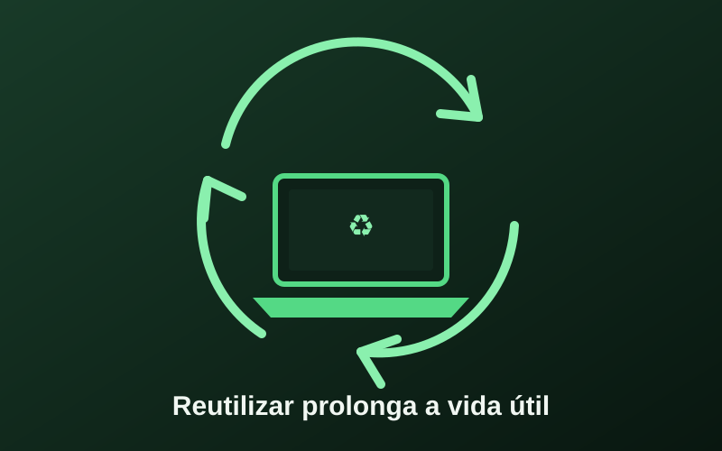
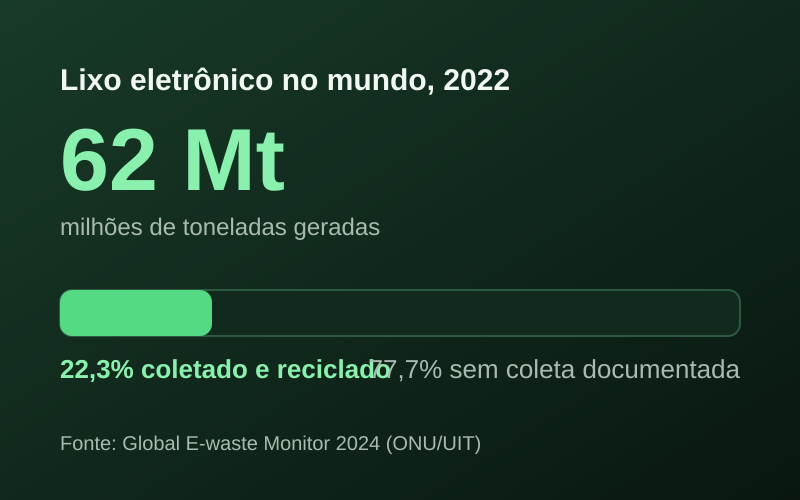
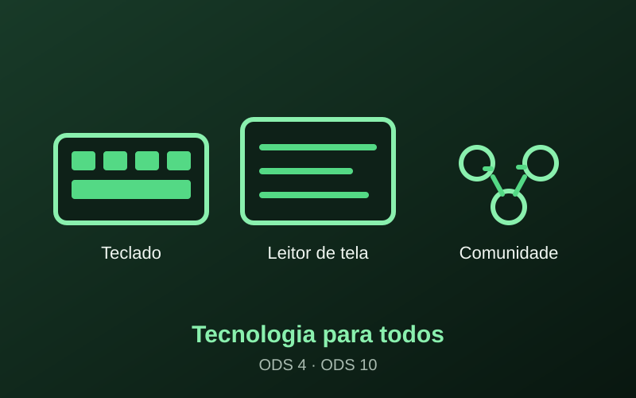
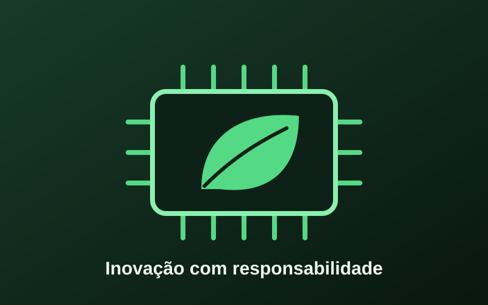

GALERIA
Imagens que contam a história.
Ilustrações autorais da equipe sobre reuso, descarte consciente e inclusão digital.




Compromisso com os ODS
O TechVerde contribui com os Objetivos de Desenvolvimento Sustentável da ONU ao divulgar informação sobre reuso, descarte correto e inclusão digital.
- ODS 4
Educação de qualidade - ODS 9
Indústria, inovação e infraestrutura - ODS 11
Cidades e comunidades sustentáveis - ODS 12
Consumo e produção responsáveis